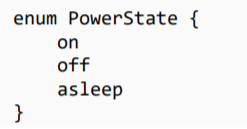

enums are a special type in GraphQL that defines a set of constants. For example the roles of a user should not be something othen than Admin,User
Like:

Now, we ensure that the data being passed to our shcema is of the enum type like so...